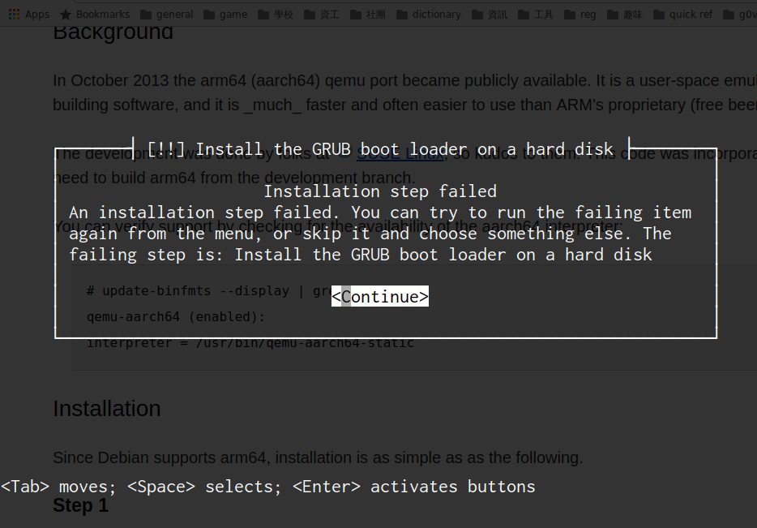
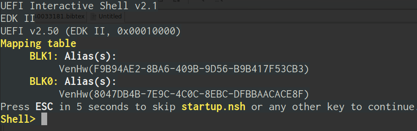

Prepare AArch64 Linux guest OS image¶
Linaro image
http://releases.linaro.org/openembedded/aarch64/16.07/
kernel: Image
rootfs1 (minimal): linaro-image-minimal-genericarmv8-20160724-830.rootfs.tar.gz
rootfs2 (LAMP): linaro-image-lamp-genericarmv8-20160724-830.rootfs.tar.gz
usage
linaro-minimal has udhcpc default script.
more about Linaro OpenEmbedded
Ubuntu cloud image
problem: ubuntu cloud image 增大:
qemu-img resize <image>+5G
Some distro provides AArch64 ISO
Problems in AArch64 ISO installed rootfs¶
ubuntu, debian, fedora 的 AArch64 rootfs 皆無法在 odroid_c2 kvm 上跑起來.
problems
ubuntu server iso 找不到 rootfs, 無法安裝
debian 安裝 grub 會失敗
fedora 裝完之後, boot 只能進到 EFI firmware
solution
CD-ROM mount: use virtio-scsi-device and scsi-cd for CD-ROM
UEFI: boot up issue(UEFI)
debian failed:

fedora failed:

Misc¶
qemu & rootfs in arm64 資源¶
odroid c2 wiki
qemu mode: kvm
rootfs: ubuntu cloud image
https://www.bennee.com/~alex/blog/2014/05/09/running-linux-in-qemus-aarch64-system-emulation-mode/
qemu mode: tcg
rootfs: buildroot, Linaro
http://stenliao.blogspot.tw/2014/10/run-aarch64-linux-on-qemu.html
http://osmanov-dev-notes.blogspot.tw/2016/03/arch-linux-armv8-vm-on-gentoo-amd64.html
qemu mode: tcg
rootfs: ArchlinuxARM generic. 用 loop mount + dump rootfs 來做 image. 但 image 好像保持 loop mount, qemu 會用 -kernel 直接指定 image 裡的 kernel.
https://gist.github.com/ecliptik/81ad7484d522097dca7f
qemu mode: tcg
rootfs: ubuntu or debian from debootstrap
https://fedoraproject.org/wiki/Architectures/AArch64/Install_with_QEMU
qemu mode: tcg
rootfs: fedora 23 (aarch64 server)
稍微整理一下
rootfs 種類
buildroot
ubuntu cloud image
ubuntu server iso
ubuntu from debootstrap
debian from debootstrap
fedora server iso
archlinux arm generic rootfs (pacstrap)
buildroot: 建立 embedded system rootfs 的 tool, 相似於 yocto/OpenEmbedded.
QEMU command 分析: ../misc/qemu_command.rst